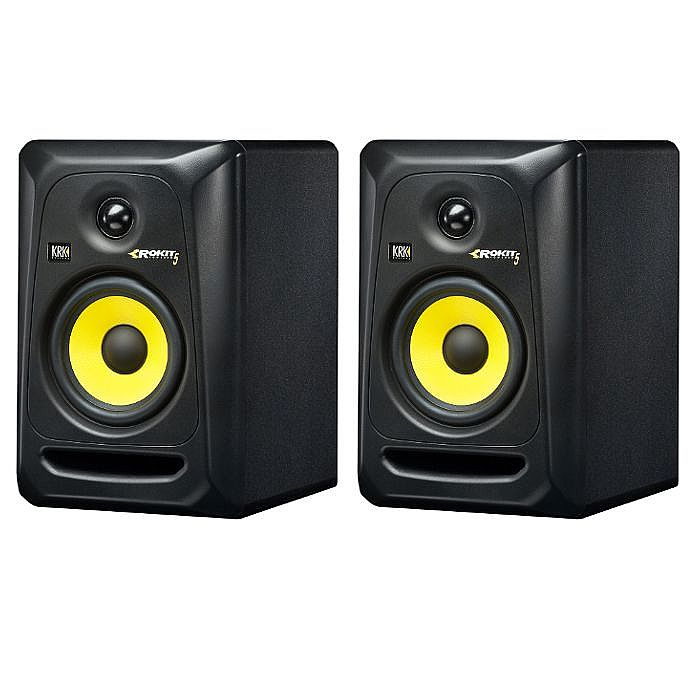

Мониторные колонки KRK ROKIT RP5 G3
Описание товара

Стоимость: 229$
Описание
G3 сделан из MDF с черной виниловой оболочкой, габариты —
24,6×18,8×28,5 см, масса — 5,9 кг.
На задней панели находится три интерфейса: балансный XLR, балансный 1/4″ TRS и небалансный RCA.
Технические характеристики
- Диапазон частот: 45 Hz-35 kHz
- Пиковый уровень звукового давления (SPL): 106 dB
- Класс усилителя: Class AB
- Выходная мощность: 50 Вт (20 Вт ВЧ/30 Вт НЧ)
- Входное сопротивление (Ом): 10 кOм (балансное)